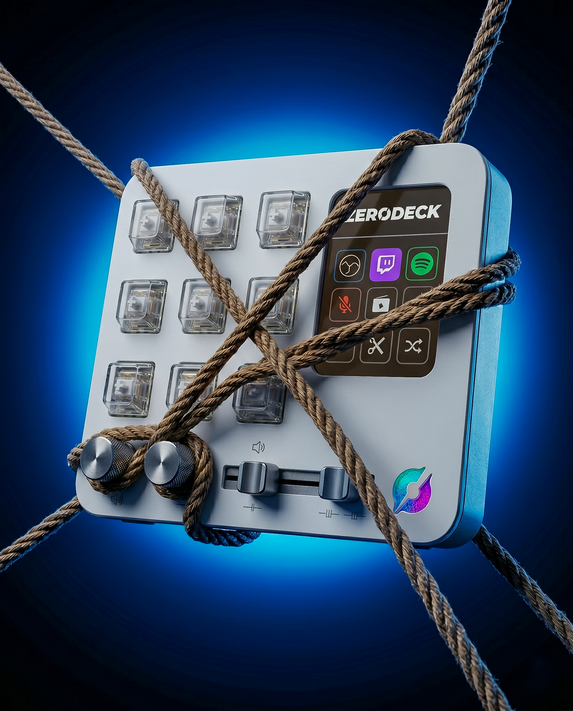

*Ön sipariş dönemindeyiz. Teslimatlar 20 Haziran'da başlayacaktır.
İş akışınızı hızlandırmak için donanım ve yazılımın mükemmel uyumu.
Her birine klavye kısayolu, makro dizisi veya uygulama başlatma atayın.
Ses seviyesi, ekran parlaklığı veya ince fırça ayarları için pürüzsüz dönen 4 analog kontrolcü.
Tak ve kullanmaya başla. Karmaşık kurulumlar yok, sadece anında Type-C bağlantısı.
Photoshop, Premiere, VS Code... Hangi uygulamadaysanız ZERØDECK sizi takip eder.
Aksiyon kütüphanesinden sürükle ve tuşa bırak. İhtiyacınız olan makroyu saniyeler içinde oluşturun.
Dahili ekranda çalan şarkıyı görün, tek tuşla müziği kontrol edin. Ritmi asla kaçırmayın.
Kurulum dakikalar içinde tamamlanır.
Type-C kabloyu tak. Cihaz otomatik olarak tanınır, sürücü kurmanıza gerek yok.
Masaüstü uygulamasını aç, aksiyon kütüphanesinden sürükle-bırak ile tuşlarını ata.
Tek tuşla makrolarını çalıştır, potlarla hassas ayarlar yap. O kadar basit.
ZERØDECK ile birlikte gelen profesyonel yapılandırma yazılımı.
Aktif pencereye göre otomatik profil geçişi.
Aksiyon kütüphanesinden tuşlara kolayca atama yap.
Değişiklikleri anında cihaza gönder, canlı durum takibi.
GitHub üzerinden tek tıkla yazılım güncellemesi.
| Tuş Sayısı | 12 Akıllı Tuş (Dinamik Arayüzlü) |
| Analog Kontrol | 4 Adet Pürüzsüz Döner Halka |
| Bağlantı Türü | Type-C (Sürücüsüz, Tak-Çalıştır) |
| Ekran | Entegre Renkli Bilgi Ekranı |
| İşletim Sistemi | Windows Uyumlu Uygulama |
| Akıllı Özellikler | Uygulamalar arası otomatik geçiş, canlı Spotify takibi, anında eşzamanlama |
| Güncelleme | Tek Tıkla Bulut Üzerinden |
KDV Dahil · Ücretsiz Kargo · Teslimat: 20 Haziran